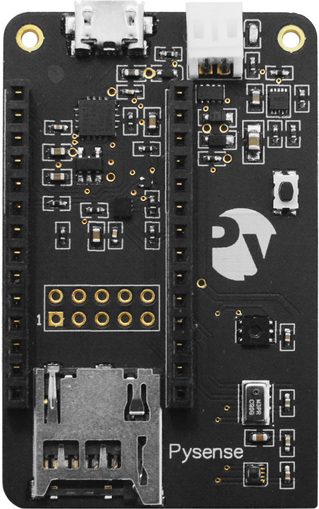
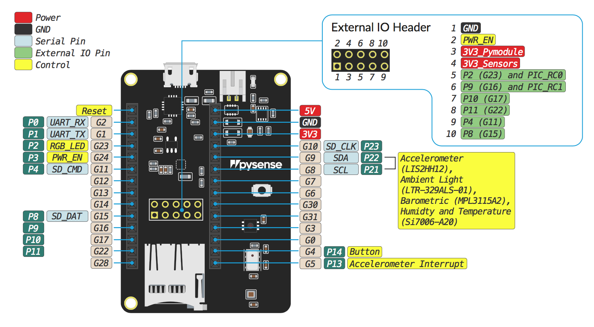
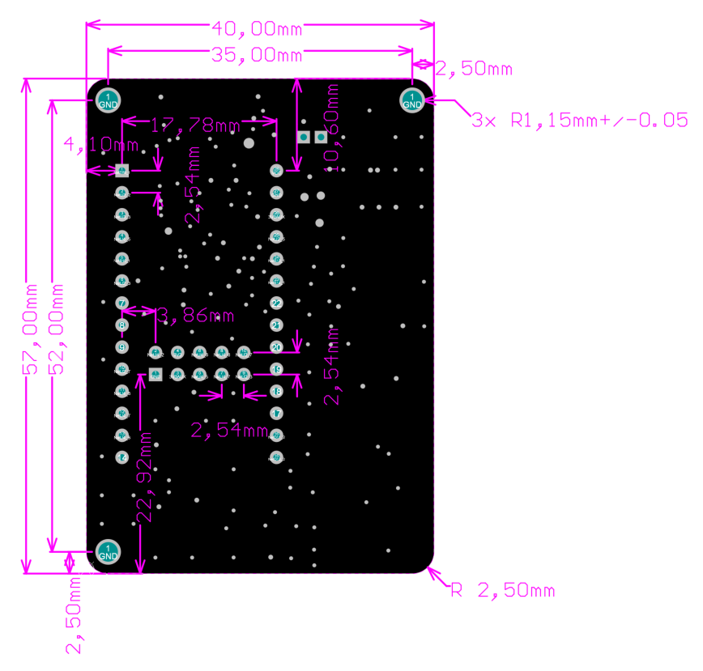

Pysense

Datasheet
The datasheet of the Pysense is available as a PDF File.
Pinout
The pinout of the Pysense is available as a PDF File

Battery Charger
The board features a single cell Li-Ion/Li-Po charger. When the board is being powered via the micro USB connector, it will charge the battery (if connected).
Mechanical Dimensions
